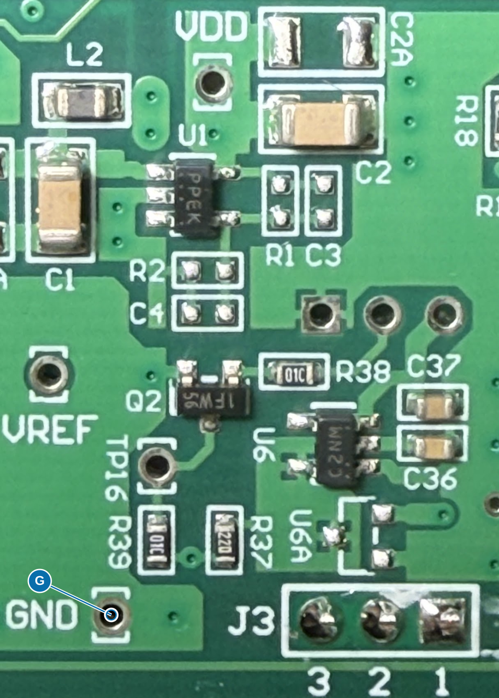
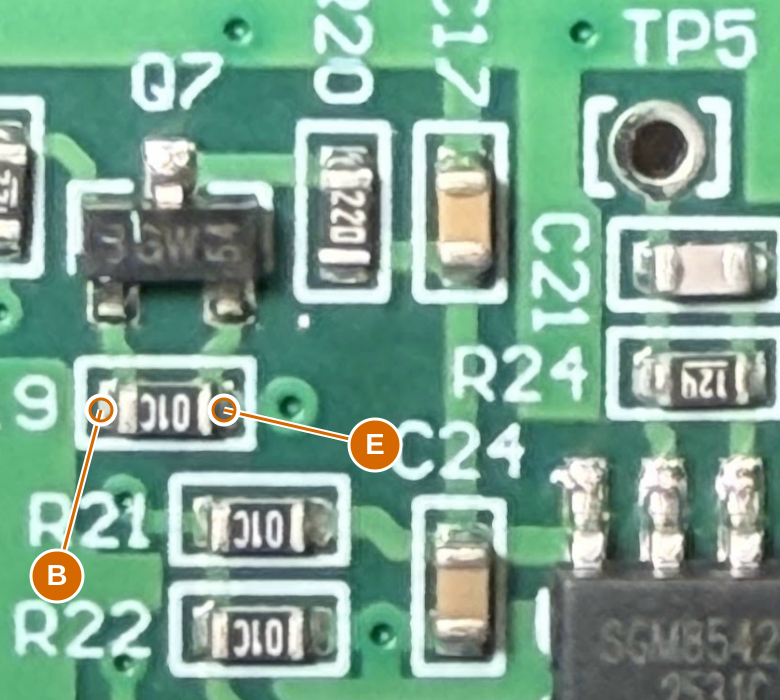

Black probe: printed GND hole

- G: The same printed GND test hole used for the six supply readings. Black probe here.
Other probe location for the same reading above; no additional test.
v0.9.39 · 2 requested readings
Keep the original battery and PIR connected, programmer disconnected, in the same red-blinking state. Use DC VOLTS with leads in COM and V/ohms. Keep black on the printed GND hole; touch one resistor metal end at a time with red.
B63: red B (R19 LEFT end) to black G. B64: red E (R19 RIGHT end) to black G. Report volts for each and whether steady or varying. Do not measure resistance while powered.

Other probe location for the same reading above; no additional test.

| ID | Red probe | Black probe | Condition | Reading |
|---|---|---|---|---|
| B63 | B | G | Powered, same red-blinking state; PIR connected | |
| B64 | E | G | Powered, same red-blinking state; PIR connected |
B62 TP5=0.066 V supports a low receiver supply but does not identify the cause. In the candidate PNP circuit, E near the previously measured 4.5 V and B close to E would support Q7 being held off. B substantially lower than E would prompt a collector/R20/load check. Both points low would instead question the local feed or its assumed routing. These DC readings cannot exclude brief pulses or establish a defective part.
Worksheet only; nothing is sent automatically. Copy before closing.
ERC: 1 retained U6/U6A output conflict. U6A is DNP; its regulator symbol remains by your request. Other source and library findings are resolved.